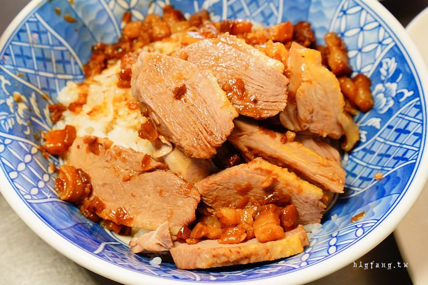

溫咖哩/推薦指數:★★★★★

牛肉咖哩唯一推薦!咖哩濃厚令人難以忘懷!
肉食族推薦選擇香嫩美國牛，煎過靜置的牛肉厚實多汁，配著兩球長米飯和濃郁咖哩超過癮～咖哩飯還有附沙拉、小菜、湯品、優格，份量剛剛好吃得飽。
鴨肉珍/推薦指數:★★★★★
有種記憶裡懷念的味道(笑)，私心推薦必吃肉燥飯和鴨肉飯，愛麵食的可以選擇冬粉系列，配一碗現煮內臟綜合湯、 下水湯就很滿足，想吃更飽就再加點脆嫩飽滿的鴨血，或是鴨肉切盤、小菜也不錯，銅板價即能輕鬆吃飽飽～
牛肉咖哩唯一推薦!咖哩濃厚令人難以忘懷!
肉食族推薦選擇香嫩美國牛，煎過靜置的牛肉厚實多汁，配著兩球長米飯和濃郁咖哩超過癮～咖哩飯還有附沙拉、小菜、湯品、優格，份量剛剛好吃得飽。
有種記憶裡懷念的味道(笑)，私心推薦必吃肉燥飯和鴨肉飯，愛麵食的可以選擇冬粉系列，配一碗現煮內臟綜合湯、 下水湯就很滿足，想吃更飽就再加點脆嫩飽滿的鴨血，或是鴨肉切盤、小菜也不錯，銅板價即能輕鬆吃飽飽～